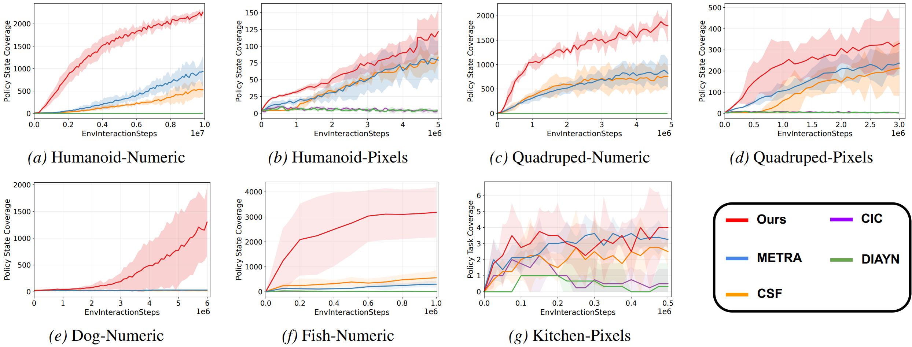

Overview
Unsupervised reinforcement learning aims to pretrain skill-conditioned policies without extrinsic rewards and reuse them for downstream tasks. GENDA targets two practical bottlenecks in off-policy URL: stale skill semantics caused by replay-buffer reuse, and brittle generalization caused by overfitting to global contextual information.
GENDA combines skill relabeling, which reinterprets old trajectories using the current representation, with a Complementary Information Bottleneck, which encourages the skill policy to focus on reusable ego-centric information. Across state and pixel benchmarks, GENDA improves skill coverage, downstream success, and robustness to distribution shifts.
Method
GENDA is designed to train a scalable skill foundation for control. It dynamically aligns replay-buffer trajectories with the evolving latent space and replaces raw policy observations with a complementary embedding for robust skill execution.
Semantic drift in off-policy URL
In off-policy skill discovery, a trajectory collected with a rollout-time skill label may no longer match the current representation. Reusing stale pairs can inject noisy supervision and reduce data efficiency.
Brittle skill generalization
When skill policies rely on global context, the same latent skill can behave differently under shifted initial states or visual conditions, making the learned skills hard to reuse in downstream tasks.
Skill relabeling
GENDA computes relabeled skills from trajectory endpoints using the current target representation, turning replay-buffer samples into more consistent supervision for representation and policy learning.
For a trajectory with endpoints \(s_0\) and \(s_T\), GENDA relabels the skill using an EMA target representation.
Complementary Information Bottleneck
CIB learns an embedding complementary to the metric-aware representation and feeds this embedding to the policy, reducing overfitting to global context such as coordinates or background cues.
The skill policy uses a learned embedding instead of directly conditioning on the full state.
Main Results
GENDA is evaluated on state-based and pixel-based locomotion and manipulation domains, including Humanoid, Quadruped, Dog, Fish, and Kitchen. The main evaluation metrics are policy state coverage during unsupervised skill discovery and downstream success rate with a frozen skill policy.
Higher coverage
GENDA achieves stronger state or task coverage across all reported environments compared with METRA, CSF, CIC, and DIAYN.
Fewer interactions
Skill relabeling improves off-policy sample reuse, enabling meaningful skills with substantially fewer environment interactions.
High-dimensional domains
GENDA learns meaningful skills in challenging domains such as Dog-Numeric and Fish-Numeric, where prior methods struggle.
State coverage
GENDA improves policy state/task coverage on numeric and pixel benchmarks, including high-dimensional Dog and Fish domains.
Downstream success rates
A high-level controller is trained on top of a frozen pretrained skill policy. The table below summarizes representative downstream results from the paper.
| Domain | Task | CSF | METRA | GENDA |
|---|---|---|---|---|
| Humanoid-Numeric | (FS, RG) | 0.35 ± 0.34 | 0.52 ± 0.12 | 0.83 ± 0.08 |
| Humanoid-Numeric | (RS, RG) | 0.08 ± 0.06 | 0.04 ± 0.03 | 0.68 ± 0.13 |
| Humanoid-Numeric | MazeEasy | 0.34 ± 0.40 | 0.19 ± 0.27 | 0.78 ± 0.04 |
| Humanoid-Numeric | MazeHard | 0.01 ± 0.01 | 0.00 ± 0.00 | 0.41 ± 0.20 |
| Dog-Numeric | (RS, RG) | 0.00 ± 0.00 | 0.00 ± 0.00 | 0.53 ± 0.08 |
| Fish-Numeric | (FS, RG) | 0.00 ± 0.00 | 0.00 ± 0.00 | 0.79 ± 0.06 |
Videos
This section shows rollout videos of GENDA executing 16 different skills across several environments. Each video visualizes a fixed set of sampled skills, highlighting the diversity and consistency of the learned skill policy.
Diverse locomotion skills discovered from numeric state observations.
Skill-conditioned locomotion behaviors learned in the Quadruped domain.
Meaningful skills in a high-dimensional state and action space.
Directional and spatially diverse skills discovered in the Fish environment.
Skill discovery from pixel observations in the Humanoid domain.
Pixel-based Quadruped skill rollouts under GENDA pretraining.
Citation
If you find GENDA useful, please cite:
@inproceedings{park2026genda,
title = {Learning Generalizable Skill Policy with Data-Efficient Unsupervised RL},
author = {Park, Jongchan and Oh, Seungjun and Baek, Seungho and Kim, Yusung},
booktitle = {Proceedings of the 43rd International Conference on Machine Learning},
year = {2026}
}